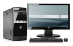
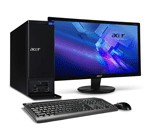

Desktops van andere merken
Dell i7

Omschrijving:
Corsair VS450 voeding
Intel 4th Generation Core i7-4790 Quad-Core 3.6GHz
Corsair 8GB DDR3-1600 RAM
Kingston V300 240GB SSD
2000GB WD Caviar Green harddisk
Intel HD Graphics 4600
1x DisplayPort, 1x DVI-D, 1x HDMI, 1x VGA
DVD+/-ReWriter double layer
5x USB2.0
6x USB3.0
8 kanaals audio
1x Netwerkaansluiting 10/100/1000Mbps
Ingebouwde cardreader
Microsoft Windows 8.1 64-bit geinstalleerd en op DVD
HP i5

Omschrijving:
Bitfenix Prodigy Mini-ITX behuizing
Corsair VS550 voeding
Intel 4th Generation Core i5-4440 Quad-Core
Corsair 8GB DDR3-1600 RAM
Kingston V300 120GB SSD
1000GB WD Caviar Blue 7200RPM harddisk
Nvidia GeForce GTX760 2GB GDDR5 videokaart
1x DisplayPort, 1x DVI-I, 1x DVI-D, 1x HDMI
DVD+/-ReWriter double layer
2x USB2.0
4x USB3.0
8 kanaals audio
1x Netwerkaansluiting 10/100/1000Mbps
Microsoft Windows 8.1 64-bit geinstalleerd en op DVD
Acer i7

Omschrijving:
Corsair VS450 voeding
Intel 4th Generation Core i7-4790 Quad-Core 3.6GHz
Corsair 8GB DDR3-1600 RAM
Kingston V300 240GB SSD
2000GB WD Caviar Green harddisk
Intel HD Graphics 4600
1x DisplayPort, 1x DVI-D, 1x HDMI, 1x VGA
DVD+/-ReWriter double layer
5x USB2.0
6x USB3.0
8 kanaals audio
1x Netwerkaansluiting 10/100/1000Mbps
Ingebouwde cardreader
Microsoft Windows 8.1 64-bit geinstalleerd en op DVD